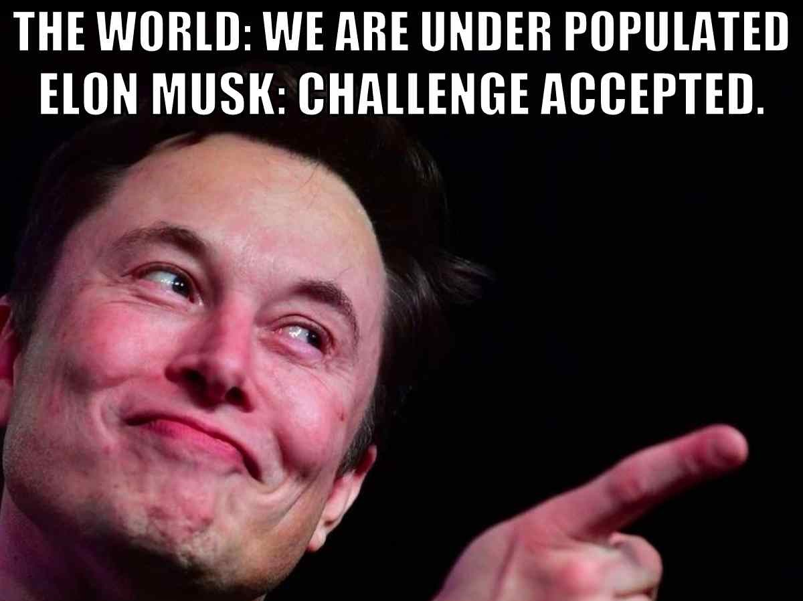
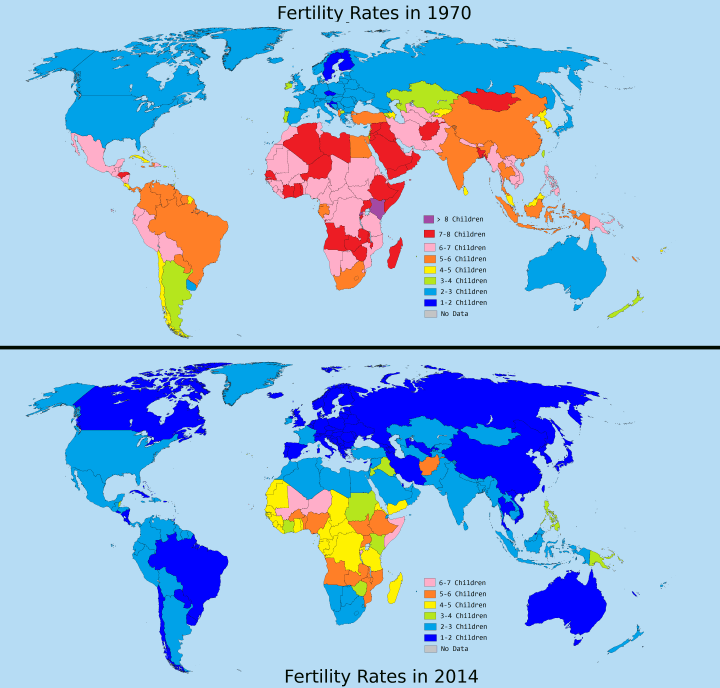
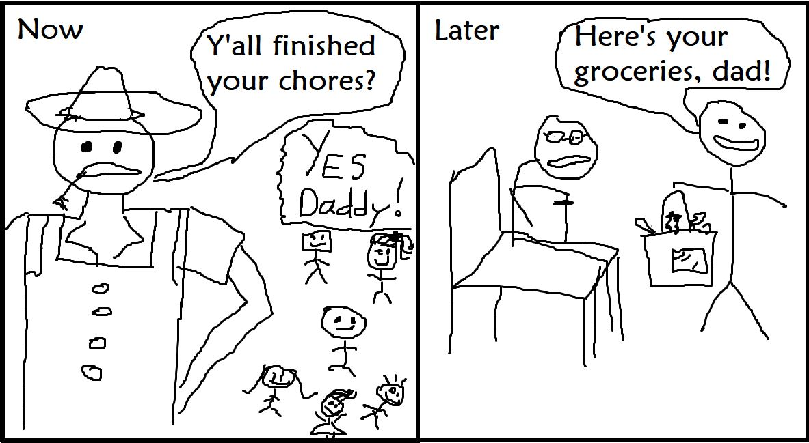
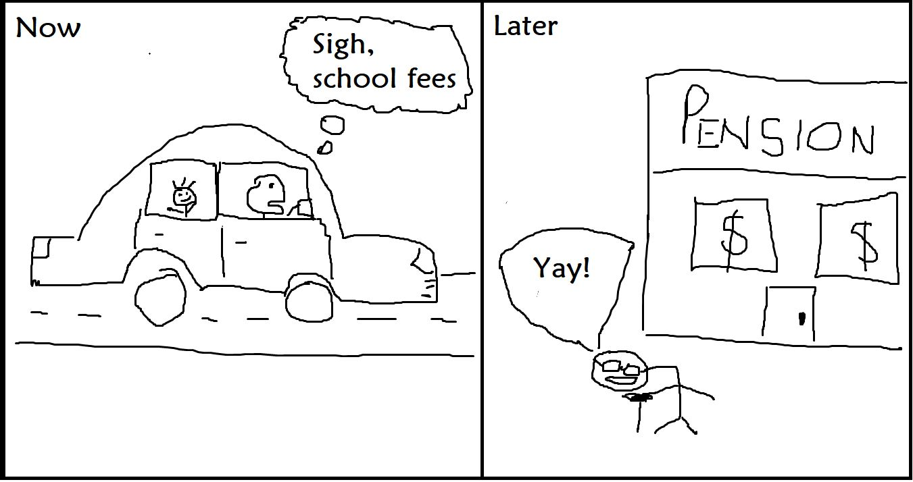
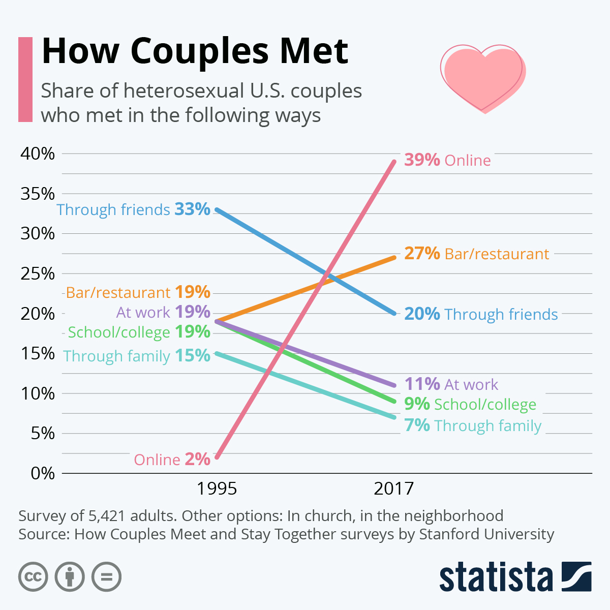
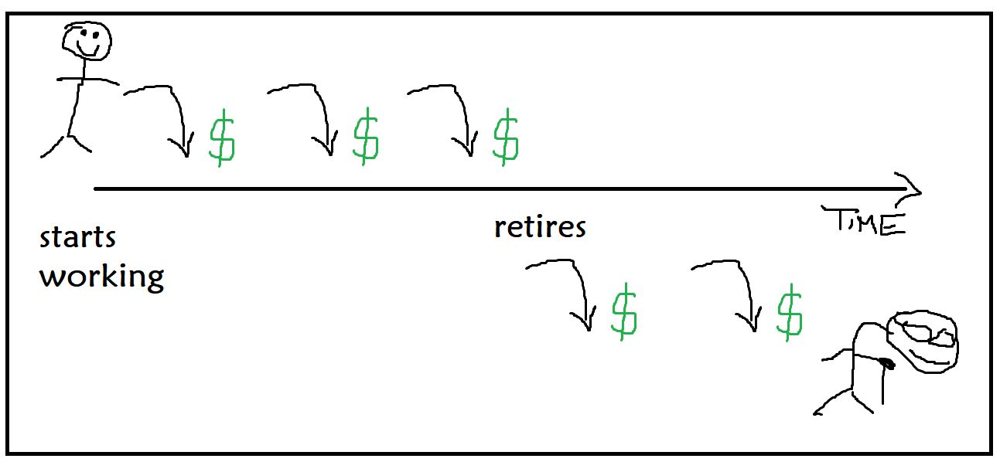
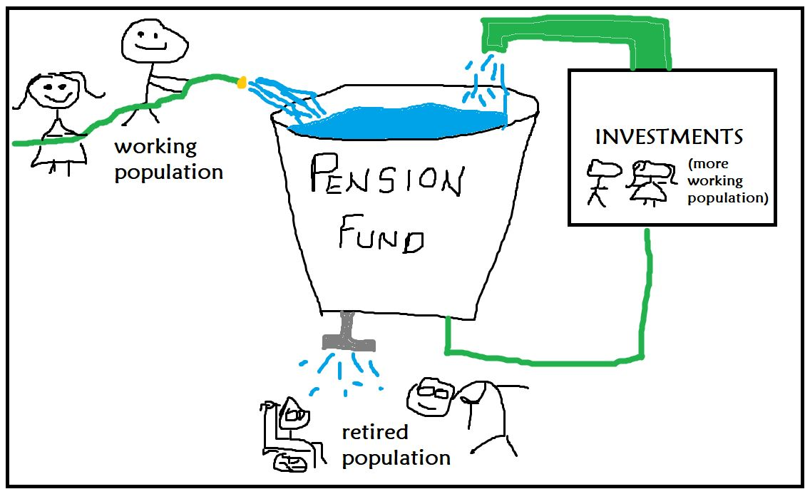
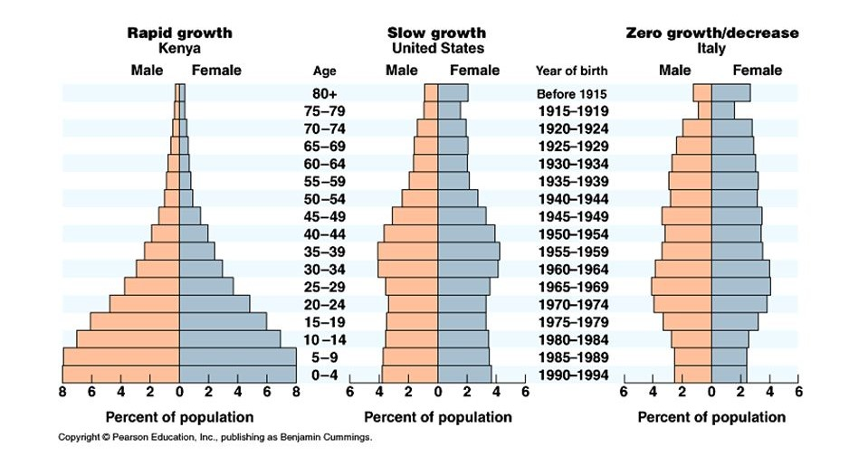
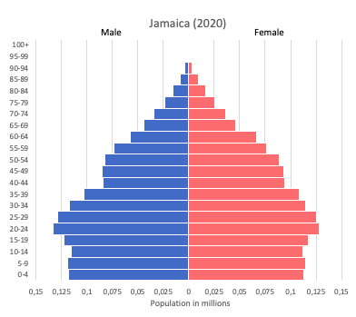

Let's talk abour birth rates
Elon Musk, sustainability and Jamaica’s report
NOTE: I was 100% gonna scrap this...but way too much has been going on about this for me to not share my POV. Enjoy the brain dump :)
 Photo credit: digitalmomblog.comWe're all used to controversy on Twitter. Especially Jamaican Twitter. So as expected, different persons were...expressive...when a government report on Jamaica's falling birth rate came out.
Different persons had different takes. Some were proud and happy about it.
I'm happy to have contributed to this 🤍 https://t.co/IuaMHUbnhx
— MS. Melanin🇯🇲 (@ARealBissh) July 6, 2022
Others gave some nerdy scholarly responses.
Contrary to popular belief this isn't good. A declining birth rate means the younger generation will have more weight to bear in terms of taxes to service the elderly. It also narrows down the base of ppl who are fertile which could make the birth rates even worse. https://t.co/NZPZNCsYJv
— Malik Smith (@MalikSmithJM) July 5, 2022
And some took the opportunity to doompost.
Have pickney fi wah? For them to come suffer and mek gunman kill them? https://t.co/hPRa9xNudX
— kathani sharma stan (@PrincessTocha) July 5, 2022
To make things even more interesting, this all came out at a time when Elon Musk became even more vocal about his concern about falling birth rates.
Doing my best to help the underpopulation crisis.
— Elon Musk (@elonmusk) July 7, 2022
A collapsing birth rate is the biggest danger civilization faces by far.
This ISN'T ONLY interesting because lots of us think Elon Musk is a clever guy who's disagreeing with what looks like the status quo, but ALSO because of this:
Elon Musk Quietly Welcomed Twins With Neuralink Executive Shivon Zilis Weeks Before Daughter With Grimes Was Born
— Diana Lynn (@anaid72) July 7, 2022
Oh boy!!!https://t.co/8y6yrhRmhw
For those of us who don't know, Grimes had been married to Musk until they "semi-separated" in September 2021. Less than 9 months before November 2021 :) when these twins were allegedly born. So of course, memers had a field day. And then...
Errol Musk, Elon Musk's father, reveals that he had a second kid with his 35-year-old stepdaughter who he’s raised since she was 4. https://t.co/NGqxXAP37B
— The Daily Beast (@thedailybeast) July 14, 2022
"The only thing we are on Earth for is to reproduce"...interesting. I'm not sharing this long string of tweets to buy into the hype over the Musks' lives or whether having babies is a miracle/nightmare, much less to say who to have children with. And I'm not encouraging anybody to take one side or another in it either—you do you. But it's hard to deny how controversial (and entertaining) this all is. Since it's so relevant right now, let's dig in to what birth rates are, some of the likely reasons why they're falling and some of the consequences we can expect to play out because of it.
What birth rates are
There are actually a few different kinds of birth rates. The simplest and most common is the crude birth rate, which is the number of live births per 100,000 people in the population. Meaning:
- places with populations less than 100k actually have higher birth rates than total births
- this doesn't tell us much about net growth. Places that suffer from having lots of violent and sickly people (like Jamaica) will need WAY higher birth rates to make up for their high death rates than places with healthier and more peaceful populations.
I'm not trying to frame Jamaica in a bad light here—I don't like the situation either. But the links point to facts and that's what we're dealing with.
We also have the corrected birth rate, which realizes that not all births might be recorded (think underserved rural areas), so it tries to correct for that statistically.
Finally, we have the total fertility rate, which is the average number of children a typical woman has in her lifetime (read: during her childbearing years). Experts agree that the replacement fertility rate is 2.1 per woman: 2 children to replace their 2 parents and a bit extra if something unfortunate happens (yes, population statistics tend to be morbid). These rates DO NOT ACCOUNT FOR MIGRATION.
There are a lot more ways of measuring birth and fertility rates that you can take a look at here, but what we just looked at should give a good picture of what we're talking about. Since fertility rates give a lot more context about how a population (sans migration) changes, let's look at how those rates have been going around the world with this graphic from brilliantmaps.
Fertility (and sorta because they're related, birth) rates are falling. Why?
Some of the likely reasons why they're falling
If you look up "why are birth rates falling" online you'll see some logical responses. A few of them are:
Economic development
Let's think about 2 people: farmer Ferb and taxi driver Tim.
Farmer Ferb has like 6 kids who 1) help out on the farm and 2) take care of him when he's older.
It's different for taxi driver Tim.
Tim only has 1 kid. Because Tim lives somewhere more economically developed than Ferb does, he has to send his 1 kid to school irather than put that child to work. Instead of children helping to bring in income for the family, they actively take away a huge portion of a family's income. Tim also doesn't really need to have kids to take care of him when he's older, because he lives somewhere developed enough to have a pension system. Why should Tim go broke to have kids when he sees no upside to it?
As economic development has increased globally, including in Jamaica, this changed the incentives for having children. Persons' choices have followed suit.
Education
Especially of women. Delayed childbirth since many go to college or some other type of training after high school instead of getting married straight away means a lower birth rate. Increased knowledge and use of contraception and a focus on careers and school instead of starting families also keep birth rates down.
People aren't meeting each other like before
This isn't discussed as often as some of the more popular reasons. But there's a general trend away from how people used to meet (mainly within social circles) vs now (primarily online), which tremendously skews incentives and, as a result, behaviour. Having children (at least on purpose) isn't as likely to happen after these more modern encounters, and as a result, they say, the birth rate falls.
Other reasons people give
Persons often cite economic uncertainty, COVID-19 and even government policies like child car seat legislation for this. You may read about those here. But there's one more reason why I think these falling birth and fertility rates have become more of a thing recently.
Hyperindividualism
Coming back to Tim's mindset: "why should I go broke to have kids if I don't need to?" seems to be the attitude of a (small) majority of persons, at least in the USA. This 2021 Pew Research Centre study found that 56% of non-parents aged 18-49 just don't want to have children.
The USA already has a very individualistic culture, so this probably doesn't represent the average human-on-planet-Earth's attitudes toward having children. But as Western culture spreads, its attitudes spread too. A lot of good comes with this—economic development and improved representation for persons who in other cultures would be a lot more disadvantaged. Why could that be?
Individualism. Western culture values the individual more than pretty much any other. We see this in ideas that many of us may take for granted:
- "You can achieve the life you want."
- "You are innocent until proven guilty."
- "You get to pick who runs the place."
- "You are who the government exists to serve."
...and probably many more. But something else logically comes with that: "let me seek my own interests first". That has some good sense to it: you can't pour from an empty cup. But sometimes this can go extra far and become "I'm gonna fill my cup as much as I can and never share with anyone else, ever".
And if someone is thinking like that, AND they'd face serious constraints on their time, finances, energy and personal freedom if they had even just 1 child, AND they can count on a pension to take care of them so they believe they don't need children...well...why would that person even consider having children?
The thing is that this works if only a few people do it. On the other hand, if MOST people in a society start to act out that idea...we easily run into a few problems. Let's flesh those out.
Some of the consequences we can expect
A lot of the "I don't need children" argument seems to come from the "I can collect a pension" idea. If we look at where pensions come from, we'll realise something very interesting.
Where pensions come from
It's easy to think of pensions as something like this: you contribute money periodically while you're working, then collect money periodically after you've retired.
And that makes sense: you put your money in while you're making it, so that you can get your money back while you're not making it. Question though: what happened to that money during the gap between you making it and you collecting it?
It got invested.
Sounds good, right? Investing means using money to make more money, right? True. But does money appear out of thin air? Not at all.
People have to work for it. Just like you would have been working while contributing to your pension fund. Money, when invested, becomes capital. And capital doesn't quite generate more money on its own—it's more like a tool to help labour generate money. Labour. Aka work. So capital doesnt have much use if nobody is working with it.
Capital multiplies labour. If labour is zero, you accomplish zero, no matter how much capital you have.
Think about it: invest your money into a factory with no workers and imagine how far that could get you. "But we have robots!" OK, fair enough. Who designed the robots? Who dug the raw materials out of the earth? Who loaded, shipped and unloaded them then put them together? Who coordinated all the supply chains? All of these jobs had to be done by people before you even hired a single worker at your factory. So for the pension system to work, people need to work too...throughout the whole time.
As you can see, pension funds have income both from working people contributing directly, and from investments they make. In these investments, they supply capital (your money) to projects where people work to make more money with it. Those people working are key to the investments actually making YOU more money while you're retired. But if nobody had children before they retired (so that the children could grow up and work to keep that pension fund afloat), the pension fund wouldn't be afloat. There would be no working population to keep the green hose going, and also no working population to work to keep the green investments pipe going. The bucket would dry up, and the poor old people would have nothing.
How this maps onto the real world
A neat visualization called a population pyramid helps us to see how relative birth rates were at different times, and how the population's pension fund buckets are likely to be looking now. (Source: slideplayer.com)
- Countries like Kenya have high birth rates and low life expectancies, so they don't have much of an elderly burden. Their struggles are more like taking care of lots of children. Later industrialization makes the average kenyan family look sort of like Farmer Ferb's family: a broad base (lots of kids/young people) and a narrow top (not many old people).
- Countries like the USA have a fat middle in the pyramid: lots of working-age people. This is amazing because there are lots of persons filling the bucket and not too many taking away from it. Here's one of the few times a fat midsection is something to celebrate :) with a catch: if the base were a bit narrower, it would mean that there won't be a lot of persons to take over when the current working population retires, and the pension bucket might not have enough water to go around.
- Countries like Italy have a fairly even distribution, so there isn't much changing according to this chart.
These figures are from 2011, so we might see a difference now. You may be curious to see Jamaica's (from worldinmaps) so here we go:
{kind=link}
We have a nice and fat midsection, but the bottom is getting smaller and at this rate, will continue to do so. There's no reason to full on panic now, but this could actually become a problem.
The subheading here said we'd talk about the consequences we can expect from this, so since we have the background covered, here goes:
- All the problems from less workers: including less money, fewer goods and services and fewer persons to maintain infrastructure that was meant to serve more people. If 5 people have to do the maintenance that 10 people were supposed to do, then each person has double the work on average.
- Rising labour costs with falling interest rates: spills over from above...but if there aren't many people to work, labour becomes scarce and therefore more expensive. If most of the people alive are looking to deploy their life savings, capital is abundant and therefore cheap. The old can barely bargain since they bring what's easy to get, and that won't likely play out well for them.
- Inflation: since we'd also have lots of people with lots of money, and a lot less stuff being produced...we have 2 compunding forces that hike prices...hitting a population of mostly old, retired people who aren't working to produce and fix it. Not good.
- Excessive burden on young people: We're already seeing this in China in the wake of the one-child policy. 4 grandparents (2 couples) had 1 child each. Those 2 children (1 from each couple) in turn had 1 child together. Before that last child even thinks about starting a family, he/she has 6 dependents (4 grandparents and 2 parents) all looking to him since they have no other children. This is something real that's going on right now.
- I'm pretty sure the list doesn't stop here, but you get the picture.
Of course there will be those who say the world is overpopulated and that we as humans will destroy the planet as a result. The thing is that people have been saying this since the late 1700s and time and again they've been proven wrong by technological advancements that make supporting more people with fewer resources possible. And even if the world were overpopulated, such a drastic fall in birth rates might not be the best solution—it's sort of like snapping a stretched rubber band back so fast that it pops.
Wrapping up
In the wake of the Musk family's shenanigans and Jamaica's recent report on birth rates, we looked at what birth and fertility rates measure, how they've been changing over the last few decades as well as some possible reasons why they've been moving the way they did. We also explored some of the consequences of falling birth rates. What we didn't explore is what can be done about it: ultimately that comes to a personal choice for everyone to make.
It's usually way less entertaining to try to be objective and not "YES let's have more kids and whoever isn't is the problem!" or equally "nah everyone having kids is bringing us one step closer to destruction", but it can be helpful to try and cut through the noise in a world where Twitter brings us MORE THAN enough of that.
As we end with a related meme from Buzzfeed with a message that a lot of persons might end up finding out the hard way, we remember that ultimately, bringing someone else into the world is a big decision.
Disclaimer: nothing here is financial (or really any sort of) advice.